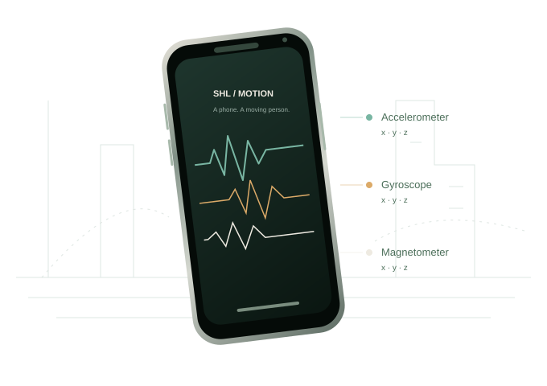

01 / The phone
Everyday device.
Remarkable signals.
In SHL, a smartphone records motion as people go about their day. The task is to recognize how they are moving from those sensor signals.
From signals.
To real life.
I build software and study how machines
can understand human movement.
MSc Computer Science · University of Tehran

Inside our SHL work
01 / The phone
In SHL, a smartphone records motion as people go about their day. The task is to recognize how they are moving from those sensor signals.
02 / The sensors
Accelerometer, gyroscope and magnetometer, with three axes each. Every five-second window contains 500 samples per channel at 100 Hz, prepared with filtering and normalization.
03 / The models
We studied five frozen models with model-specific classifiers. The final system combines probabilities from NuTime, Mantis and TiRex using weighted linear late fusion.
Final fusion weights: NuTime 54% · Mantis 29% · TiRex 17%. UniShape and TSPulse: 0%.
04 / The movement
Still, Walk, Run, Bike, Car, Bus, Train or Subway. Eight modes connecting the phone’s measurements to a person’s journey.
Method illustration · signal traces are schematic
Open full-size illustration ↗Research interests
Learning useful representations from sensor data, with a particular interest in foundation models and generalization.
Recognizing activity and transportation modes from IMU signals and complementary pretrained models.
Studying clinical gait and freezing of gait, with careful attention to participant-level evaluation.
A shared achievement
First place in the Sussex–Huawei Locomotion Challenge 2026, as a member of team UT-IR at the University of Tehran.
Our work explored early and late fusion of frozen time-series foundation models for human activity recognition.
University of Tehran announcement
Selected research · 2026
Full titles. Clear status.
Work you can explore.
Early and late fusion of frozen time-series foundation models for activity and transportation mode recognition.
Phase-aware clinical gait assessment using frozen time-series representations and participant-level classification.
Frozen time-series foundation models for detecting freezing of gait from wearable IMU signals.
Accepted papers are listed with their current status; proceedings publication details are added when confirmed.
Experience
Feb 2026 — present
Milli
Building services, real-time data integrations and web interfaces with Python, FastAPI, Redis and React/TypeScript. Attention to caching, reconnection, tests and deployment.
Jan 2025 — Mar 2026
Kharazmi University
Implemented Python genetic-algorithm methods for graphical unequal-probability sampling research.
Explore the project ↗2024 — 2025
Kharazmi University
Supported Artificial Intelligence, BP Code and Advanced Programming through Python/PyTorch assignments, Git instruction and autograding.
Algorithm and Computability Theory
Where the path began.
Keep the conversation moving
Research, software and thoughtful collaboration.
amirbasuti@ut.ac.ir